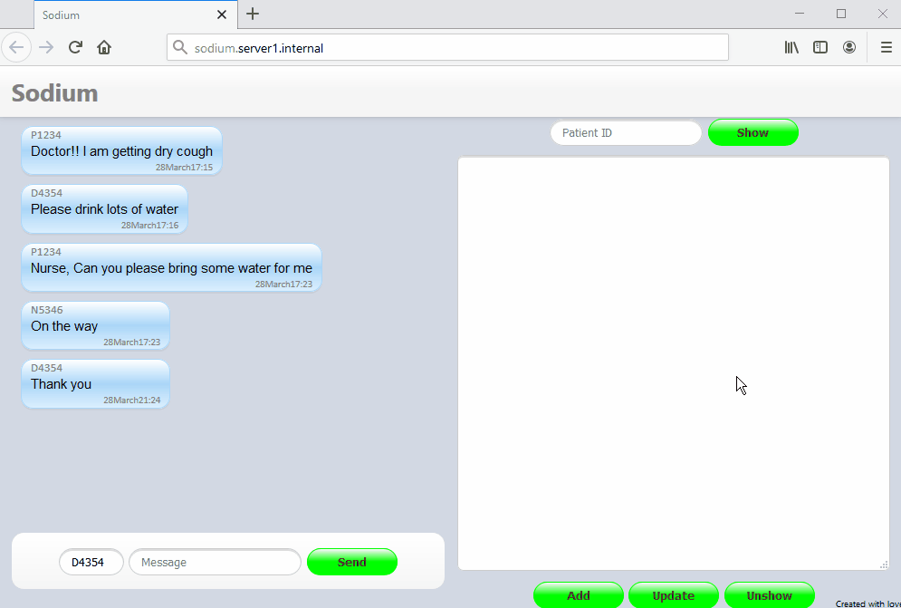
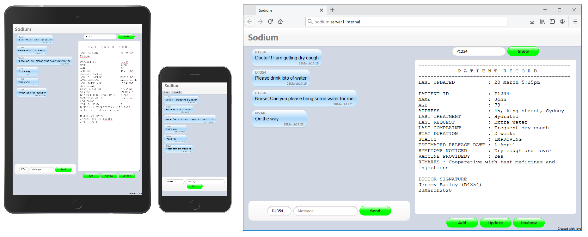

|
Sodium
Social distance unto medicos
github.com/ppml38/sodium
|
Sodium imposes social distance between doctors and patients.
During current spread of COVID-19, "Social distancing" is proven to be the single most practice that can prevent COVID-19 spread.
Governments are making it mandatory for general public, Though that include doctors, nurses and health workers, they cannot distance themselves from patients, especially inside hospital. and we cannot lose them for infection.
Although, It is nearly impossible to completely eliminate Doctor-patient contact, Sodium app is designed to reduce realworld contact between them as much as possible, unless necessary.
Specially designed for COVID-19 temporary hospitals that handle large number of patients with minimal or no IT infrastructures Sodium is designed to run even in your daily laptop or a raspberry pie.
Features
- Stand alone server application with inbuilt customized-http and datastorage management systems
- Easy to install with no external third-party dependancy
- Works in wifi networks, internet domains or corporate in-house networks across geo locations.
- No end-user installarion, users can connect from their browsers
- Multi platform suppprt
Demo

How to install and run
- View the github repository on github.com/ppml38/sodium
- Download /dist directory and keep it in desired folder(ex. C://Program Files/sodium/)
- Once downloaded double click on the Sodium.jar
- The server is running now. Thats it.